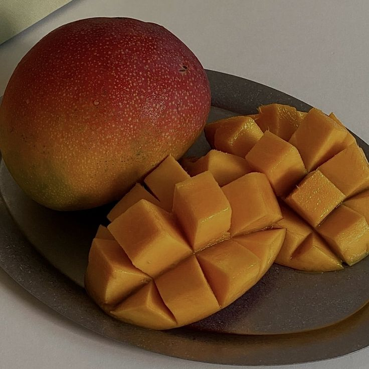

Cek Tingkat Kematangan
Mangga dari Foto
MangoCheck membantu Anda mengenali apakah mangga masih mentah, sudah matang, atau mulai busuk melalui analisis gambar berbasis AI yang presisi.

Mengapa Memilih MangoCheck?
Solusi cerdas untuk memastikan kualitas mangga dengan teknologi visual yang akurat.
Cepat dan Praktis
Dapatkan hasil analisis hanya dalam hitungan detik. Cukup ambil foto melalui smartphone, dan sistem kami akan langsung memberikan penilaian tingkat kematangan.
Bantu Kelola Stok
Pisahkan mangga berdasarkan tingkat kematangan secara efisien. Optimalkan rotasi inventaris Anda dan pastikan produk terbaik untuk pelanggan.
Kurangi Food Waste
Identifikasi mangga yang mulai membusuk lebih awal. Ambil tindakan preventif untuk meminimalisir kerugian akibat produk yang terbuang sia-sia.
Cara Kerja MangoCheck
Ambil atau Unggah Foto
Pastikan mangga terlihat jelas dengan pencahayaan yang cukup. Gunakan latar belakang yang polos untuk hasil optimal.
Analisis AI Berjalan
Sistem MangoCheck memproses gambar menggunakan model machine learning yang dilatih dengan ribuan sampel mangga.
Dapatkan Hasil
Lihat status kematangan (Mentah, Matang, Busuk) beserta skor keyakinan dan rekomendasi penyimpanan.
Unggah Foto Mangga
Seret foto mangga di sini atau klik untuk memilih file.
Format: JPG, PNG (Max 5MB)